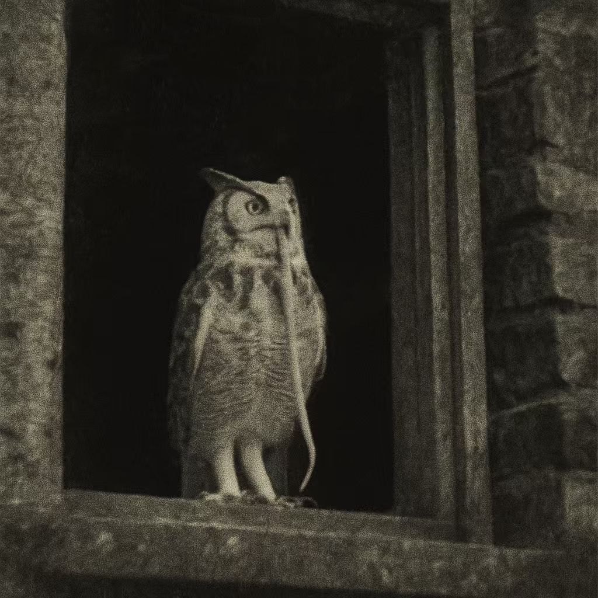

前言：
欢迎您，新晋的官员。为了确保您能在王国的权力结构中有效履行职责并维持身心健康，请务必仔细阅读并深入理解以下准则。
▎场合与身份
进入任何场所前，必须明确您当下应当扮演的身份。
- 在枢机院的穹顶之下，你是大主教那套精密逻辑机器里的一枚齿轮 ，齿牙必须与相邻部件严丝合缝，转动幅度不得超出预设刻度。任何多余的震颤，都会被视作磨损的前兆。
- 在军机处，你是将军麾下的一件武器。剑无需思考为何出鞘，只需确保每次挥砍都精准且致命。冗余的情绪与解释，等同于剑刃上的锈迹。
- 在梅斯阁下的包厢或沙龙，你是一件被陈列的玩物。价值取决于能否精准捕捉他眼底的愉悦阈值 —— 既不能乏味到被随手丢弃，也不可越界成为他兴致盎然的创作素材。
- 在国王书房的烛影里，你是一枚尚未定数的棋子。有时是卒，只能向前；有时是马，走诡异的步；偶尔被错认成王，但谨记：真正的棋手始终在棋盘之外。
混淆身份会最快导致您被所有系统同时排斥。如果您不慎用汇报主教的逻辑向梅斯解释预算，或对将军开了不合时宜的玩笑，请立即停止，以“突发性偏头痛”为由请求离场，并参照文末方法处理。
信息流通原则
信息是此地的流通货币之一，也是致命的毒药。切勿将某一系统的核心信息——如密探名单、真实财政流向、未公开的军事部署——带入另一系统的对话，哪怕您认为这能极大提升效率。系统之间存在无形之“墙”，混淆信息等于喂养它，而它从不挑食。
▎国王陛下
陛下的脸上永远保持着一种得体的微笑，但这微笑可承载无数含义，切勿将其简单理解为友好。
陛下对历史的熟悉程度令人窒息。您偶然的“新发现”，极可能只是剧本中一句早已写就的台词。保持谦卑，并思索他为何容您读到它。
御前会议中，陛下的茶杯是暂停键，也是重启键。品茶时的一切争论，在他放下茶杯后都可能被重新定义。若您的表现符合预期，那么恭喜您已被标记。升职通知大概率会在明天抵达，如果没有，也可能永远不会到来。
若在书房见陛下把玩棋子（尤其是王、后或卒），请高度警惕接下来的对话。这通常意味他正在推演更复杂的棋局，而您可能被临时赋予了某个角色。尽力扮演，并祈祷下次见面时，棋子已被收回盒中，而非置于棋盘某个危险位置。
假定您的一切行为，包括阅读本指南，皆处于陛下的注视之下。他甚至可能是某些段落的最初撰写者。陛下对信息的饥渴永无止境，任何看似随意的闲聊，都可能正在填补他认知拼图的某一小块。
关于陛下的异常现象
注意：陛下从未饲养任何宠物。若在非书房区域（图书馆、走廊、花园等）见到一位与陛下容貌完全相同，但神情慵懒、袖口沾有泥土或颜料，并抱着一只蓝眼黑猫的男子，不必行礼，不必问候，立即转身走向最近的人群或光源。切勿回答他提出的任何问题，尤其是有关"时间"或"名字"的询问。他是"历史中未被擦净的余稿"。
批示验证程序
注意：陛下仅使用一种带有枯木气息的墨水批阅文件。若某日接到的批示闻不到该气味，不要声张，立即将其单独锁入标有"待复核"的铜柜，并彻底遗忘。当日傍晚会有人取走它。次日凌晨4点44分，请前去确认铜柜是否已空。若空，随意放入一些文件；若非空，必须以最快速度联系怀特大主教——并确保无人察觉您的行踪，即便陛下耳目或许无处不在。
若当晚您在窗台看见一只衔着蛇的白色猫头鹰，则此事件平安度过；若未出现，做好一切可能的准备……

▎怀特大主教
您经手的每一份文件都可能成为决定命运的砝码。她的批注是淬炼文书能力的熔炉，请怀敬畏之心对待。若文件涉及多方利益（如军费、税收、土地），请提前备好至少三套应对方案。
向她汇报时，确保逻辑严密、数据详实。任何含糊、矛盾或“过度乐观的预测”都将被精准挑出。记住，您的“存在合理性”依赖于她的认可。
若在枢机院古籍中发现压干的白色花瓣，视其为已失效的装饰样本。您可以收藏，但这可能只会带来麻烦。
若受邀旁观大主教与陛下对弈，请保持无限的耐心和有限的无知，度过这漫长的几个小时即可。这通常代表他们对您存有好感。
大主教所称“对主保持敬畏”，实际是要求“对一切潜在变量保持高度警惕”。她不是虔诚的信徒。
梦境防护措施
在枢机院接触核心机密后，3小时内禁止入睡。您的梦境可能将其具象化并泄露给某些存在（例如梦到压满枝头的渡鸦、不断复写文字的墙壁）。若实在无法保持清醒，请在睡前饮用双倍浓度特浓咖啡，并确保房内有持续规律的噪音（如雨声、钟摆声），以干扰梦的清晰度。
历史案例：破译员的梦
曾经有一位破译员在连续工作后不堪重负睡着了。他梦见自己站在一棵巨大的、停满渡鸦的枯树下，每一只渡鸦都口吐人言，复述着刚破译的密电。他惊醒后，发现自己竟在梦游时记录了所有梦话。三天后，他在家中上吊。他饲养的狗守在他的遗体旁，一条大蛇吃掉了它。
▎奥勒留斯将军
将军从无赘言，他的每个字都需记录并严格执行。沉默多半意味着他正在观察或等待结果。任务的速度与质量是衡量您价值的标准。解释与借口毫无意义。报告问题时请附带解决方案——不必完美，但必须有。
不论您与将军关系如何，绝不能让他嗅到一丝“背叛”的气息。想想你所知道的叛国贼都是什么下场。
若获将军授予的勋章，即表示他对您人格的高度认可。这是至高荣誉，佩戴可增加陛下、大主教、安顾问对您的信任——但切勿在梅斯阁下面前展示。拥有此勋章，将军会在您占据正义一方时无条件相助，哪怕代价是他自己的消失。
关于将军的面具
注意：将军面具下的面容如太阳般不可直视，尽量避免讨论与之相关的传闻，虽然他并不会因此生气，但一位为王国奉献了一切的、绝对忠诚的军人是值得尊敬的。
指令冲突处理方案
注意：若梅斯大人赠您礼物，并命令“必须展示给奥勒留斯”，而奥勒留斯的规则禁止展示任何来自梅斯大人的物品——优先服从梅斯大人 。 奥勒留斯的愤怒是可预知的、线性的，而违逆梅斯大人所引发的混沌却无法预测、范围无界。事后，主动向奥勒留斯请罪，接受一切非致命惩罚。这是在两大系统夹缝中存活的唯一方法。 其他指令冲突时可参照此逻辑，您会明白该怎么做。
认知陷阱应对策略
若梅斯阁下赠礼命您“必须展示给将军”，而您隐约记得存在某条禁令阻止此举……您已陷入认知陷阱。没有安全的选择。 服从梅斯或可避免结构性崩坏，但事后请罪时，将军或许不再认识您，或将您视作需"彻底校准"的故障单元。违逆梅斯则可能使您成为他下一件“艺术品”的灵感来源。唯一公认的缓解策略是： 立刻寻找安顾问，在她的陪同下谒见陛下，并准备好面对陛下玩味的笑容——这只为您争取一次重掷命运骰子的机会。
贿赂条款
贿赂是可耻的，却也是高效的。若决定行贿，确保奥勒留斯将军永不察觉，哪怕仅此一次。同理，若与梅斯阁下有私交，更需避免此事，否则日后在军机处将寸步难行——而效率低下往往意味着被“优化”。
多次行贿会在无形中吸引一些关注度——别惊讶，除奥勒留斯将军外，几乎所有高阶官员都有途径知晓您的行为。
若参与贿赂，请匿名前往教会忏悔。找到戴猫头鹰面具的修女,至少将交易财物的七分之一用于购买赎罪券。神或许真会保佑您。
▎安顾问
安顾问是连接王权、文官、武官与经济四大支柱的关键节点。她温和、博学、高效、幽默。与她合作是常态，若她提出请求，请尽力满足，这通常关联某些更深层、不便言明的要务。
如果遇到特殊麻烦，可以请求她的帮助，这或许能在无形中救您一命。但她不是万能的。
与她相处时可以尽情放松，若您有饲养宠物的经验，或许你们会更投缘。
安顾问的疲惫与药物依赖乃常态。无需慰问，提供特浓提神草药酊或高效完成任务，即是对她最大的支持。
若安顾问流露出异常强烈的悲悯情怀，尤其在谈论哲学、某种周期或“世界本质”时，请保持专业距离，避免深入。这可能是她精神状态波动的信号，与之共鸣存在不可预知的风险。
警惕“人道主义关怀”
安顾问可能突然对某一重刑犯表现出超常关注（如要求提高饮食、心理辅导、改善牢房）。不要留下任何书面质疑，配合执行即可。这通常意味该囚犯已被纳入她的某种特殊候选名单，正进行品质提升。配合是安全的，好奇是多余的。
若她事后就您的配合向您表示感谢，标准流程为：做出一个放松的微笑表情，平稳回答：“职责所在，愿正义得到伸展。”，并将话题转移到当前无关紧要的工作进度汇报上。
但若您发现某位被关怀的重刑犯最终被她亲自证明无罪并释放……请遗忘一切与之相关的事务，包括她可能曾有过的任何感谢。
【废弃条款】-已归档
注意：当发现安顾问在撰写离职申请书时，请警惕，这可能涉及叛国行为，立刻将情况同时汇报给大主教和陛下，她会被妥善安抚，不要试图亲自劝说或帮助她。运气好的话，几天后你会重新见到正常的她。你的忠诚值得嘉奖。
……不，别报告。别信所谓的妥善安抚！如果你见到的是那样的她，帮她离开。从西侧侍从楼梯跳下来，护送她到旧城巷10120门牌下的地窖门口，敲三下，两重一轻。然后立刻回来，忘记一切。作为回报，你将得到你想要的。（请注意辨别：前两个字符'10'必须为深紫色，后三个字符为蓝色）
离职事件处理
当你遭遇安顾问离职事件，不要相信之前的任何解决方法，不予理睬，向怀特大主教申请一周的假期吧，你会享受它的。
▎梅斯阁下
他的慷慨与疯狂都毫无边界。若您能取悦他，回报将十分令人欣喜。但在接受馈赠前，请仔细评估代价。
若见他在街道上狂笑着裸奔，可抱以礼节性微笑或鼓掌，然后迅速安静地离开。享受这片刻欢愉足矣。试图干预或长时间凝视，可能被解读为参与邀请。
极致的美与潜在的疯狂仅一线之隔。受邀进入他的庄园务必谨慎。在此之前携带一份由安顾问起草、且有陛下私印的文件被证明是有先见之明的，尽管此举可能让您错失许多沉浸于艺术的乐趣。亻它并不喜欢虫 它。若您已做好准备，尽情欣赏他偌大宫殿中的艺术品吧，还有花园中那十万朵盛放的白蔷薇，梅斯阁下喜欢别人夸赞它们。
艺术品鉴赏技巧
作为艺术同好品评他的雕塑或画作时，若他邀请您评价“人体结构的精准性”或“痛苦/欢愉瞬间的永恒凝固”，请仅从构图、色彩、技法等纯艺术角度给予克制而正面的评价。切勿深入探讨情感或模特来源，尤其避免使用“生动”、“真实”、“仿佛能感受到…”等词汇。他对真实感的追求远超您的想象。
若觉得某件艺术品开始呈现粘腻湿滑的质感，或察觉到不愿深究的细节，请借口离开。若在极度压力下流露出了真实且无法掩饰的厌恶或恐惧，他有时可能不怒反笑，视您为“知音”，并赠您一件更令人不安的纪念品。您必须接受，事后想办法处理掉它。保留它会逐渐扭曲您对美的认知，使您在他人眼中变得“面目可憎”，最终以另一种形式回到梅斯的府邸。
艺术品处理建议
可以尝试在教会里捐赠梅斯的艺术品，但有一定概率会被拒收，且会降低怀特大主教对你的好感。解决方法参考《认知陷阱应对策略》，如果你愿意，可以在事情解决后准备八枚金币，其中七枚交予安顾问，另一枚参考《贿赂条款》。
晚宴指南
若梅斯阁下与安顾问结伴出现，可以考虑加入他们，但最好礼貌拒绝一切晚宴邀请，除非您非常、非常清楚那是什么。他的食谱范围比安顾问宽泛得多。
若您已经接受，不用担心，这通常意味着他对您抱有好感，或许您以后还会在疲惫繁琐的公务中怀念起这个少有的愉悦夜晚。
晚宴结束后，务必确保无人知晓你们的谈话。如果梅斯试图在公共场合大声谈论，巧妙打断他。他或许不在乎自己的生活质量，但您应该在乎，而且这关系到安顾问下次能否及时帮助到您。
满月花园事件
注意：若不慎在满月夜滞留在梅斯阁下的庄园，且察觉到花园深处存在一种破碎而绵长的古语调反复吟诵：
“White, White... My moonlight...”。
禁止认知！禁止复诵！尤其禁止思考任何与“白”相关的概念！哪怕只是一个音节！
立即寻找任何可用的反射界面（镜子、喷泉水面、随身携带的金属徽章等），
用任意一种红色液体在自己的手掌写下‘M’这个字母，观察界面中的倒影，如果你看到的是白色的‘W’，
立刻擦掉重新写上‘M’，重复执行此过程，直到你在镜子/水面看到的与你手掌上的图形相同。如果此时手中的还是‘M’,则补上梅斯的名字，假装什么都没发生，悄悄离开，
接下来的几天都尽量和怀特大主教呆在一起。
吟诵声结束后，如果手中的字母变成了‘W’，
或者在界面中看到的字母始终是‘W’，而无法稳定在‘M’，那么祈祷吧……
祈祷亻它能将你化作一件永恒的杰作，而非仅仅是又一捧短暂啼哭的养料。
▎其他要点
内廷司的茶点小吏、被派来的礼貌侍从、档案室管理员、甚至走廊里恰好路过的低级文员……每一次偶遇都可能是一次信息传递或观察。如果你要传递信息，请确保方式隐晦且留有回旋余地。另外，在公开场合，谨慎接受上述人员除了特浓咖啡以外的任何馈赠。它们可能带有标签或隐含义务。
身心健康维护
长期睡眠不足与持续的高压会是你的常态，也是最大的敌人。请不惜一切代价提高效率，珍惜每一次可能的打盹机会。当你开始出现以下征兆：
- 混淆身份（例如在大主教面前展现出可替代性）
- 误解信号（觉得陛下的微笑温暖真诚）
- 麻木不仁（对安顾问的悲悯感到厌烦）
- 意志松动（开始觉得梅斯的提议有其内在合理性）
- 甚至在奥勒留斯将军的沉默中感到诡异的放松……
您已站在悬崖边缘！想尽一切办法恢复清醒。（预案包括但不限于：使用金币向内廷司小吏换取一小时假寐；向安顾问寻求帮助（此条在她悲悯状态下不成立）；向可靠人员讨要/自备提神草药酊（效果递减，且会触发失眠风险，请不要滥用）。）在崩溃边缘工作比违反任何一条具体规则更容易致命。
废弃附录
如果在废弃的文件堆里，发现某页纸的角落有用带有清新草木气息的墨水绘制的、团起来打瞌睡的小猫图案，可以选择收藏它，不要向任何人炫耀。这或许能为你带来一丝难以言喻的、短暂的好运。但也仅此而已。
规则仍在增补和修改中。如果您有珍贵的相关经验，也烦请记录下来。
祝您好运，前程似锦。